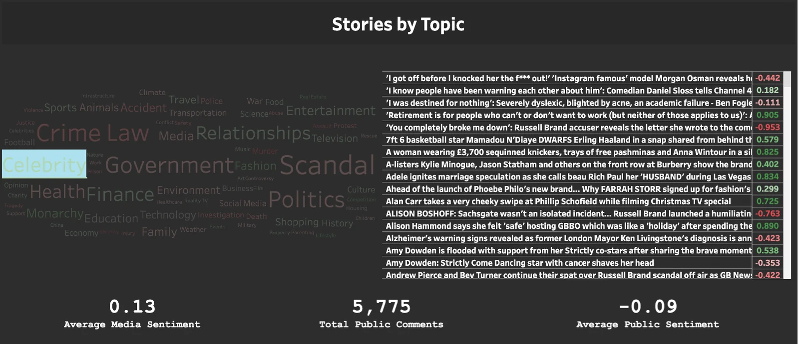
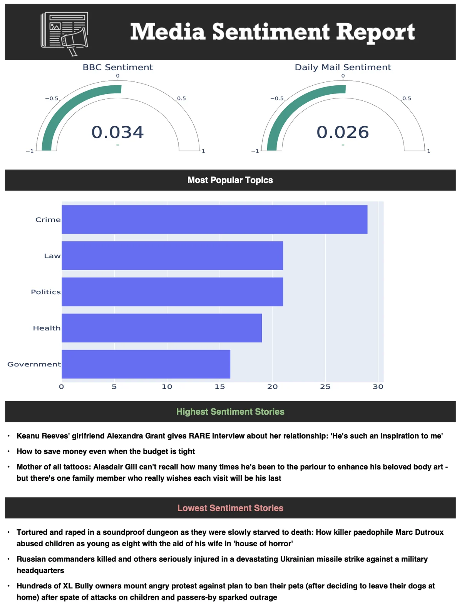
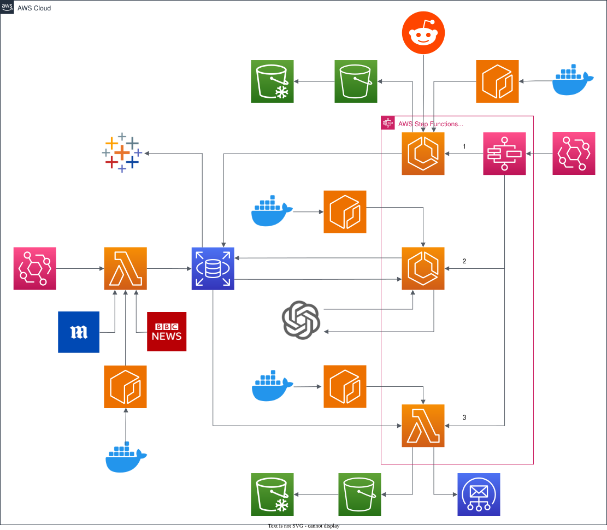

01Data engineering
Media Sentiment
A project designed to evidence the bias of media outlets on current topics.
- Role
- Lead Engineer & Quality Assurance
- When
- Sep 2023 – Present
- Team
- Originally a team of 4
- Type
- Data engineering

Overview
Despite reporting on the same topics, different media organisations can have wildly different coverage and messages. Collecting and analysing data on how coverage differs between organisations helps us understand the media landscape and its bias.
The pipeline uses NLP to calculate the attitude within text used by the BBC, the Daily Mail and Reddit/BlueSky, comparing the negative or positive sentiment held on current topics, with each story categorised by AI.
The project now lives on as Coup, the Media Sentiment Analyser at coup.digital.
My role
Lead engineer and quality assurance. The original 2023 build was delivered by a team of four, working in an Agile way.
- Agile development of the project
- Cloud resource initialisation
- Fabricating 2 dashboards
How it works
UK news articles are extracted from different RSS feeds, and related articles from other outlets are matched up alongside comments about the same story on Reddit.
- Sentiment analysis scores every article and comment from −1 (most negative) to 1 (most positive)
- Topic keywords are extracted with ChatGPT so coverage of the same story can be linked across sources
- Everything is loaded into a PostgreSQL database on AWS RDS
- A Tableau dashboard visualises the results, and an email report with a PDF attached shares the day's most popular stories and key insights
Engineering practice
- Separate pipelines for news feeds and public (Reddit) sentiment
- AWS resources set up and torn down with Terraform
- GitHub Actions run pytest and pylint on every pull request into main
Gallery


Enlarge image

Enlarge image

Enlarge image